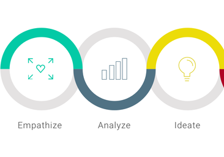
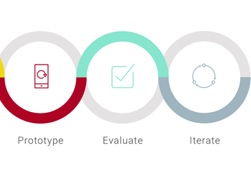

Hello
My name is Youxi Li (Yuki).
I am ...
an open-minded Learner,
a Web Developer,
and a Front-End Engineer.
I love ...
Human-Centered Design,
Programming, and
exploring Human Cognition.

I do human-centered design by utilizing my understanding in human cognition to do merge technology with everyday life more smoothly. I love programming for it can not only efficiently present and distribute the design, but also it potential effect for the society in the future.

Goal of 2017
- Host personal website
- play tennis everyweek